福岡からジェットフォイルで3時間弱。朝福岡を出発したら、昼にはもう釜山である。
そんな釜山で韓国三大観音聖地と称される海東龍宮寺に行ってみた。
釜山市の郊外、海沿いにあり、景勝地としても人気のお寺だ。
結論として今回の修行ではお寺と呼べるところはココしか行ってない。
釜山には他にも数多くの名刹があり、さらに足を延ばせば世界遺産の石窟庵や慶州などなど古刹名刹はたくさんあったが、今回は時間がなくて全部パス。
また次の機会に行きます。
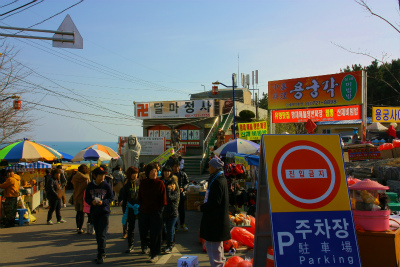
当たり前だが、韓国の看板はほとんどハングル。
ハングルが全然読めない私にとってはセブンイレブン以外の看板はほとんど意味をなさなかった。
それでもこの寺のように観光客が多い場所には中国語英語たまに日本語の表記がある。
さて、修行の始まりである。
参道には数多くの屋台が並び、大勢の参拝客が押し寄せていた。
ちなみに参道の店はおでん屋、仏グッズ屋、お菓子、縁起物、などなど日本のお寺と同じようなラインナップ。
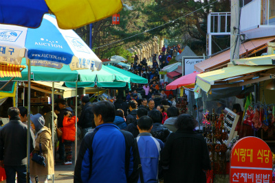
ちなみにおでんは韓国でも「おでん」という。魚の練り物ではなく、クレープの皮のようなものを丸めて串に刺してだし汁に漬けたもの。
コレが旨い。安くておやつに丁度いいサイズ。屋台には蜂の子も売ってました。
屋台が並ぶエリアを抜けるとやっとお寺っぽくなってくる。
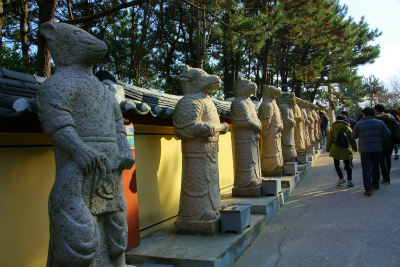
頭だけが動物化している十二支人間の石像。
みな自分の干支のところに立ち、記念撮影してました。
その対面には何故か抽象的な彫像が。意味判らんけど面白いからいいや。
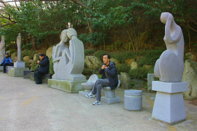
韓国の方々も記念撮影は大好きな御様子。あちらこちらで撮影大会状態になっていた。
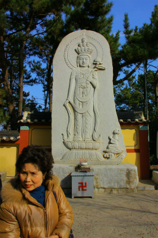 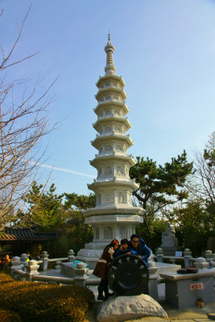
参道の突き当たりにはこんな門がある。ここから先はアップダウウンが激しくなる。まずはグッと下り階段。
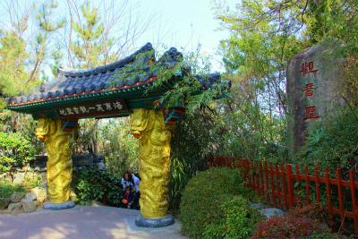
階段を降りきると今度はトンネル。ちなみに得男佛とはお腹を撫でると男子が授かるという石仏。
男だけが得をするとかそういうことではない。トンネル入り口の上に顔だけが嵌め込まれているのがややコワイぞ。
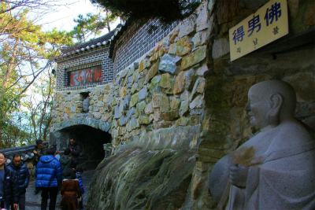
トンネルを抜けると小さなお地蔵さんが御出迎え。絶妙のコインワークを披露している。
確か学業の願いがどうの…とありました。
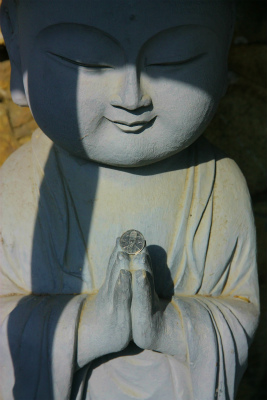
意味不明の塔。石で組んだ蟻塚みたいだ。百八…何だろう。階段の段数かな。
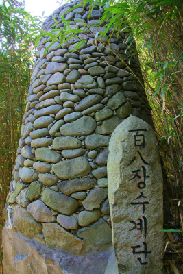
目の前にこの寺の全景が広がる。
先ほどまでの参道は前座でトンネルを潜ったこちらが龍宮寺の心臓部である。

湾内に面して建っているの寺。背後は急な岩山でチョット要塞っぽくてカッコいいぞ。
本堂に向かう前に左手の枝道に寄り道。
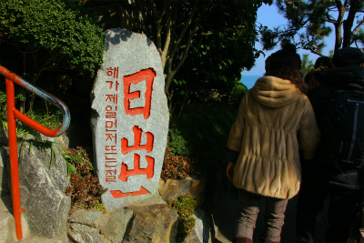
日の出スポットなのだろう。
途中薬師如来の石仏があり、おばあさんが拝んでいた。
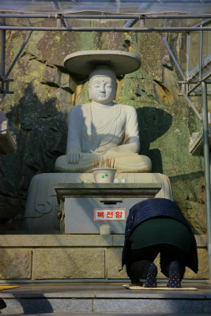
韓国の石仏はこのように頭の上に平らな笠のようなものが乗っているケースが多いようだ。
そして膝を突いてお参りするので参拝スポットにはマットが敷かれている場合が多い。
さらに進むと視界が広がり、日の出スポットに。
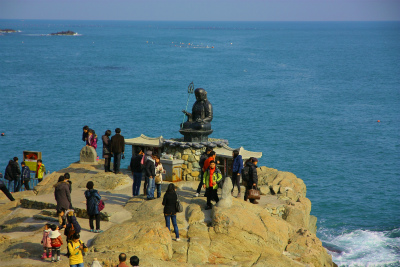
岬の先端にはお地蔵さんがおり、その背後には真っ青な海が広がる。
そしてここでも皆さんおでんをモグモグと。
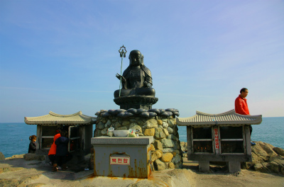
後で地図で確認すると大体この背後かやや右あたりから日が出るようだ。
韓国で初日の出を拝する習慣があるのかどうか判らないが、御来光を拝むのにはベストスポットだろう。

お地蔵さんの両脇にはたくさんのロウソクが奉納されていた。
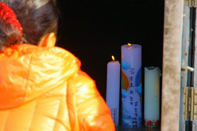
日の出スポットの脇には赤い橋が架かっていた。
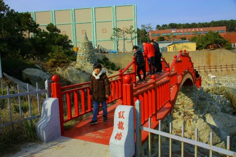
橋の直下だけが深く切れ込んだ断崖になっており、はるか下で波が打ち寄せていた。
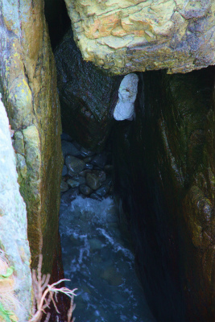
橋を渡るとまたしても石積みの蟻塚のようなモノが。
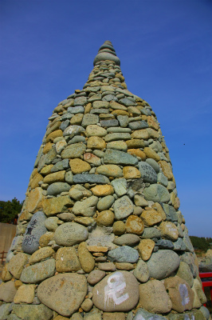
石には様々な願いごとと思しき文字が書き込まれている。
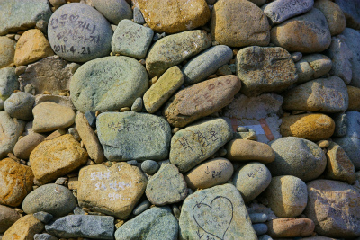
もちろん読めないが、フォントの浮かれた感じから浮かれた願い事が書き込まれているのだろうと推察できる。
その奥には浮かれてない感じの石積みもチラホラ。
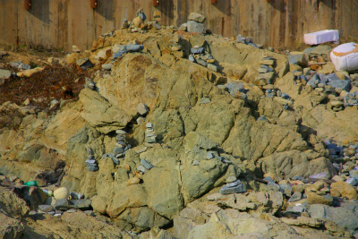
この先、水産試験場的な施設があり、お寺のエリアとしてはここまでっぽいので来た道を引き返す。
メインの道に戻り、本堂を目指そう。
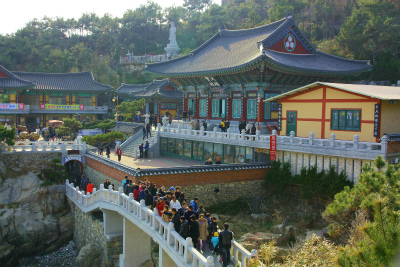
途中に小坊主人形がポツンと積み石の上に座っていた。これが今後の展開を暗示しているとは薬師様でも気付くまい…
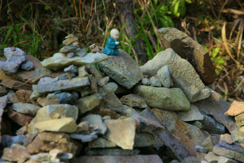
さらに下り階段。両脇にズラリと並んだ灯籠の火袋の中には一体一体小さい仏像が置かれていた。
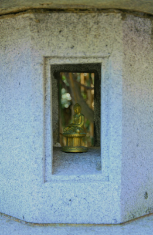
本堂にいたる石の太鼓橋。
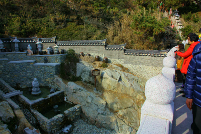
谷間にある彫像の持つ鉢を狙って賽銭を投げている。
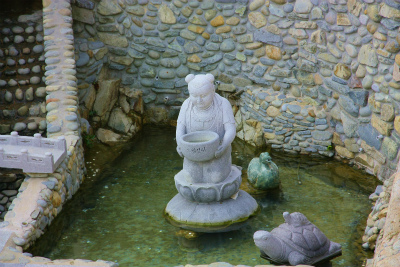
ふいに子供の頃、近所の年寄りに「おアシ（お金のことね）を投げるんじゃないよ！」と叱られたことを思い出した。
いや、この手のコイン投げアトラクション系賽銭を目にするといつも思い出すのだ。あの婆さん。
おかげでこの手の賽銭って未だに入ったことがないじゃないか！
脇にはボートの彫刻が。
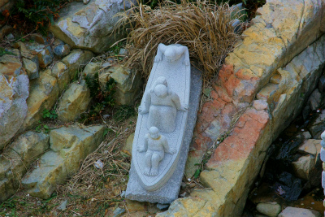
今後、散々思い知らされるのだが、韓国って矢鱈に石で作っちゃう能力が高くないか？
このボートも、別にわざわざ石で作らなくても…という力作。
この国の石工のレベルの高さが見え隠れ。

さて、橋を渡りきったらいよいよ本堂エリアに突入だ！
次はメインのエリアだ！
釜山珍寺大作戦